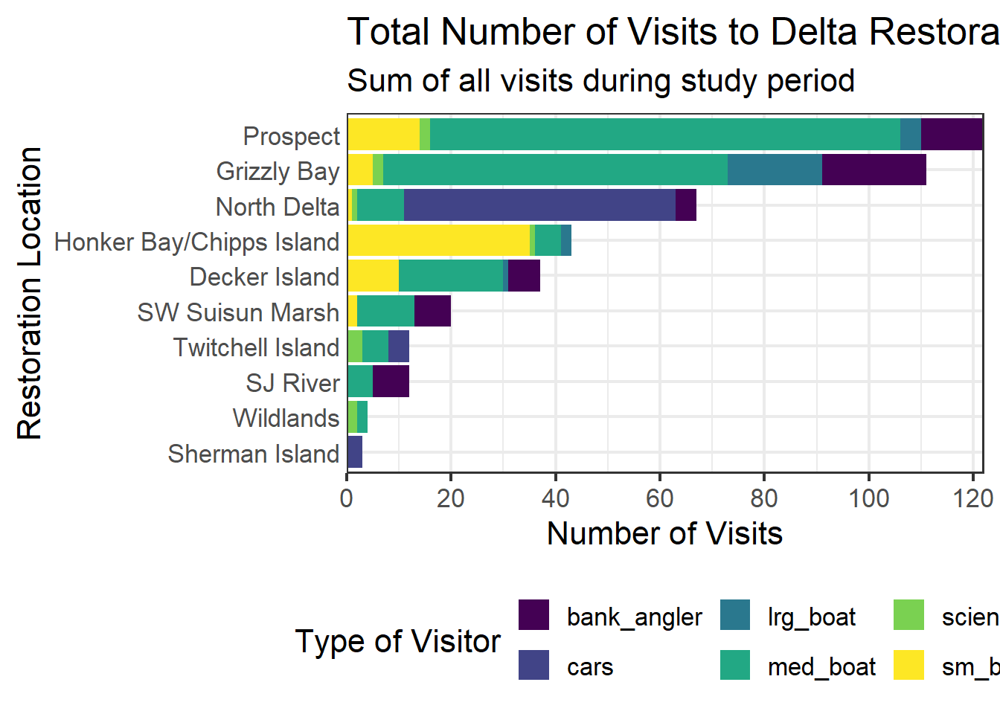

library(readr)
library(dplyr)
library(tidyr)
library(forcats) # makes working with factors easier
library(ggplot2)
library(leaflet) # interactive maps
library(DT) # interactive tables
library(scales) # scale functions for visualization
library(janitor) # expedite cleaning and exploring data
library(viridis) # colorblind friendly color palette
delta_visits_raw <- read_csv(here::here("data/raw/Socioecological_monitoring_data.csv"))Data Visualization
BIOL 806- assignment 5
Introduction
This project analyzes data from 10 sites in Ecorestore project, monitoring human activities. The goal is to create a visual comparative bar chart of human activity types across sites, and display the corresponding location on an interactive map. Data source: https://portal.edirepository.org/nis/mapbrowse?packageid=edi.587.1
Setup
Loading libraries and data:
Data Wrangling
cleaning column names:
#cleaning column names
delta_visits <- delta_visits_raw %>%
janitor::clean_names()
#changing to long fromat
visits_long <- delta_visits %>%
pivot_longer(cols = c(sm_boat, med_boat, lrg_boat, bank_angler, scientist, cars),
names_to = "visitor_type",
values_to = "quantity") %>%
rename(restore_loc = eco_restore_approximate_location) %>%
select(-notes)calculating daily visit number:
daily_visits_loc <- visits_long %>%
group_by(restore_loc, date, visitor_type) %>%
summarise(daily_visits = sum(quantity))Creating a bar chart
#re-ordering the variables
daily_visits_totals <- daily_visits_loc %>%
group_by(restore_loc) %>%
mutate(n = sum(daily_visits)) %>% #adding a column showing the tot number of visits
ungroup() %>%
mutate(restore_loc = fct_reorder(restore_loc, n)) #sorting "n" column ascending creating a theme:
my_theme <- theme_bw(base_size = 16) + # saving a custom theme with size,
theme(legend.position = "bottom",
axis.ticks.y = element_blank()) # removing the ticks on y axiscreating a bar chart:
ggplot(data = daily_visits_totals,
aes(x = daily_visits, y = restore_loc, #defining the axes
fill = visitor_type)) + #using different colors in each bar based on visitor type
geom_col() +
scale_fill_viridis_d() + #using color blind friendly colors
labs(x = "Number of Visits", #labeling the axes, adding legend, title, and subtitles
y = "Restoration Location",
fill = "Type of Visitor",
title = "Total Number of Visits to Delta Restoration Areas by visitor type",
subtitle = "Sum of all visits during study period") +
scale_x_continuous(breaks = seq(0,120, 20), expand = c(0,0)) +
#adding 20 range numbers on x axis, removing the gap between the y axis and the bars)
my_theme
# using the custom theme that was saved beforesaving the bar chart:
ggsave("figures/visit_restore_site_delta.jpg", width = 12, height = 6, units = "in") #defining size and unit to export a jpgCreating a map
creating a df for location:
locations <- visits_long %>%
distinct(restore_loc, .keep_all = TRUE) %>% #keeping each unique location
select(restore_loc, latitude, longitude) #keeping desired columnsusing leaflet to create an interactive map with location points:
leaflet(locations) %>%
addProviderTiles(providers$Esri.WorldImagery) %>% #adding base tiles
addProviderTiles(providers$CartoDB.PositronOnlyLabels) %>%
addCircleMarkers( #adding location pins
lng = ~ longitude,
lat = ~ latitude,
popup = ~ restore_loc,
radius = 5, #choosing location point marker size, color, opacity, and outline
fillColor = "salmon",
fillOpacity = 1,
stroke = TRUE,
weight = 0.5,
color = "white",
opacity = 1)Discussion
The data was collected before restoration efforts to inform how restoration efforts will affect human use and activity in these sites.
The bar chart shows significantly higher amount of human presence in Prospect and Grizzly Bay. The most common observation in both location are medium boats. Most locations show different types of boats as the dominant human presence, except North Delta and Sherman Island, where cars are more common.
Referring to the map, this difference in types of human activity can be explained by proximity to rivers vs roads.